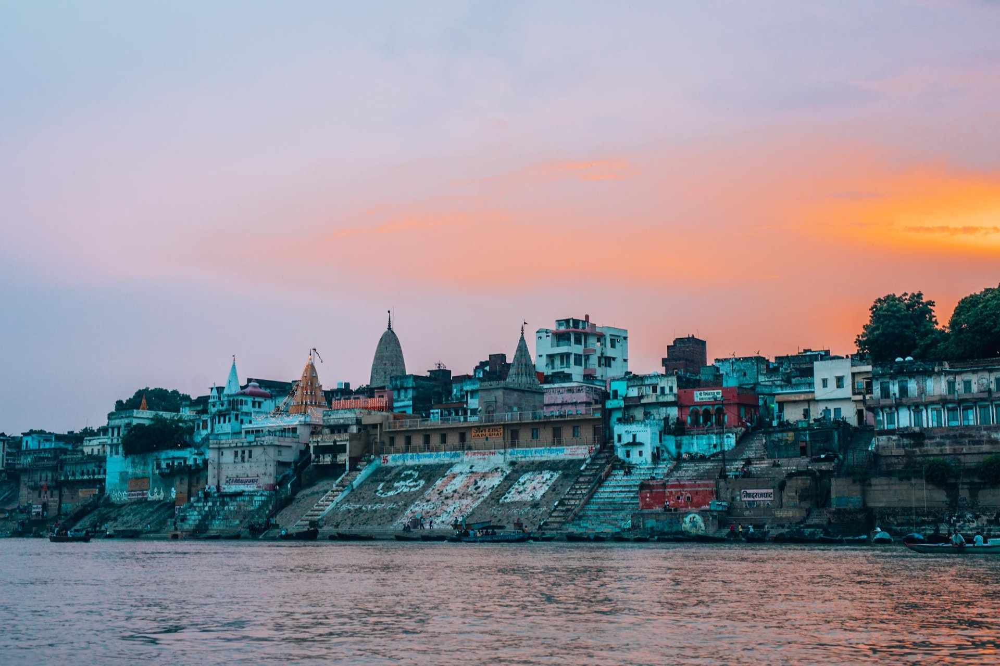

Lord krishna's city Dwarka
Known for its shrine of Lord Krishna, Dwarka is believed to have been the first capital of Gujarat. Located in the Saurashtra peninsula of Gujarat, Dwarka is part of the Char Dham pilgrimage and is also one of the seven ancient cities (Sapta Puris). Also known as Dwaravati, Dwarka is derived from the words ‘dwara’, meaning door and ‘ka’ refers to Brahma. Hence, Dwarka means the gateway to Brahma or Moksha
After leaving Mathura, Lord Krishna established his kingdom at Dwarka on the banks of Gomti River. Legend has it, after the death of Lord Krishna, the city of Dwarka submerged under the sea. It is said that the city was rebuilt six times and the present city is the seventh.
-
-
Nageshwar Jyotirlinga temple
-
-
Shree Swaminarayan mandir
-
-
Bhadkeshwar Mahadev Mandir
Old city of Dwarka
Archaeological Survey of India has revealed the existence of a old city dating back to two centuries. The excavation work carried between 1983 and 1990 revealed that a township was built in six sectors. A fortified wall, extending more than half a mile has also been unearthed. The present day Dwarka is a prominent pilgrimage site and boasts of several shrines. Among the temples, the 2000-year-old Dwarkadheesh temple is the most notable one.
Besides its temples, the city is also popular for its beaches. Scuba diving to see the underwater remains of Dwarka is a popular activity here. DO READ Best Places To Visit In Gujarat: Biggest Tourist Attractions in Narendra Modi’s Home State
Dwarka is also a shopper’s delight. Patola silk sarees, Bandhni fabrics, embroidered handicraft items, embellished footwear and local souvenirs are worth a buy.
Best places to stay in dwarka
Dwarka has several hotel options. One can find many budget and mid-range hotels. Some hotels also offer guided tours of archaeological marvels. Dharamshalas are available too, at very low costs.
Best places to eat in dwarka
Being a temple town, restaurants generally serve vegetarian cuisine. Most of the restaurants serve Gujarati, South Indian and North Indian cuisines. Gujarati thali is popular and you should try Khamman Dhokla and sweet buttermilk
Confused finding your dream destination ?
we find many people struggling to decide which place to visit , worry no
more .
Feel free to contact us and book a personal turist guide, you can get
contact information under about us page